The first step of creating a NeRF from scratch is to calibrate the camera so that we can learn certain camera properties. This is done using special visual tracking targets called ArUco markers, which help with reliable keypoint detection across images. To begin calibration, I used many images of the ArUco tags taken with my camera. I then used the detections of the corners of these markers to compute the camera intrinsics matrix, K. Then, I scanned an object of choice by placing it next to one ArUco marker. Since I used the same camera, I was able to use this data to solve for the camera-to-world matrix. Finally, I visualized the set of poses in Viser, obtaining the following results:
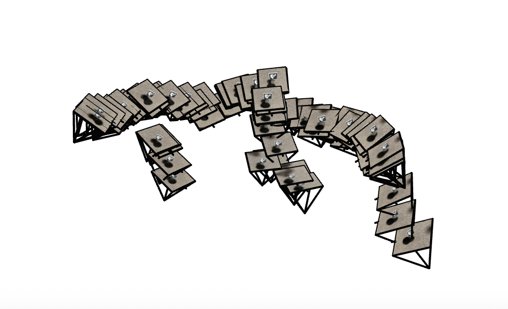 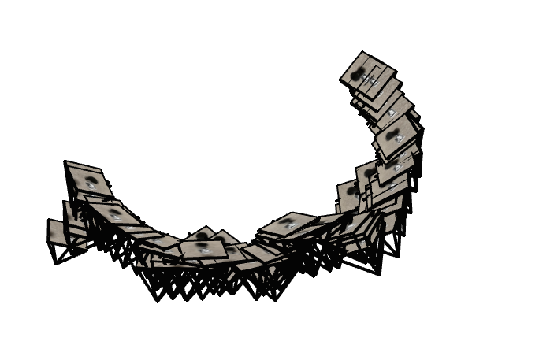 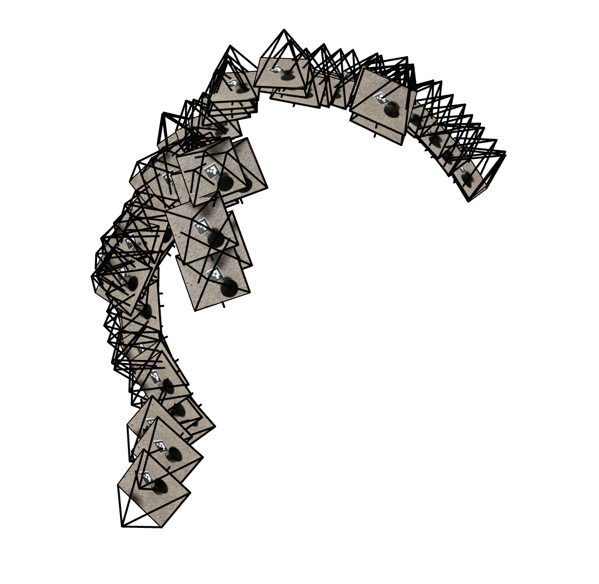The data values were then stored so that they could be used to train a NeRF later on.
The 2D version of a NeRF (neural field, no radiance) simplifies the estimated function to a mapping from pixel coordinates (u, v) to color values (r, g, b). This is done using an MLP with the following architecture:
self.model = nn.Sequential(
nn.Linear(input_dim, width),
nn.ReLU(),
nn.Linear(width, width),
nn.ReLU(),
nn.Linear(width, width),
nn.ReLU(),
nn.Linear(width, output_dim),
nn.Sigmoid()
)
The input_dim is given by the value of L (positional encoding maximum frequency), and the width is given by the hidden dimension. Both of these are treated as hyperparameters that are varied. Other training details include: max training iterations = 3000, batch size = 10000, learning rate = 1e-2, model optimizer = Adam, and loss function = MSE.
This approach is tested on the following 2 images:

The following is the training progression on both images, showing the rendered images from the network at different iterations throughout the training process using L = 10 and width = 256:
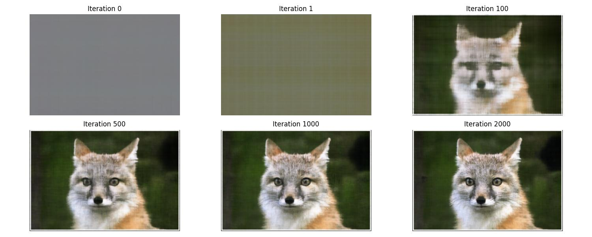The quality of the resulting images also changes as the hyperparameters change. For both images, 4 sets of hyperparameters were run, with 2 values per hyperparameter: L = 5, 10 and width = 64, 256. The performance of the network can be measured by tracking the peak signal-to-noise ratio (PSNR), which tends to be a good measure of image reconstruction quality. The training progression comparisons and PSNR curves for the fox are:
L = 5, width = 64:
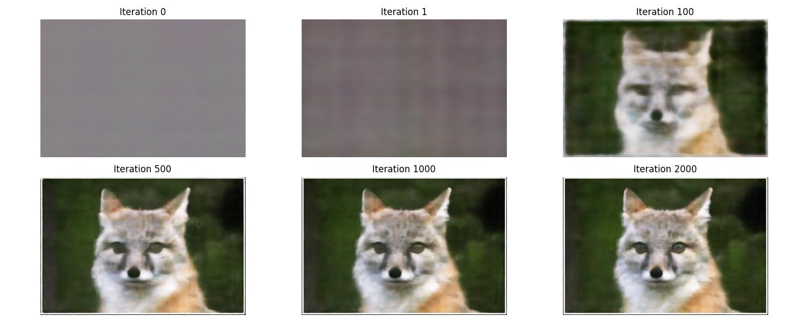
L = 10, width = 64:
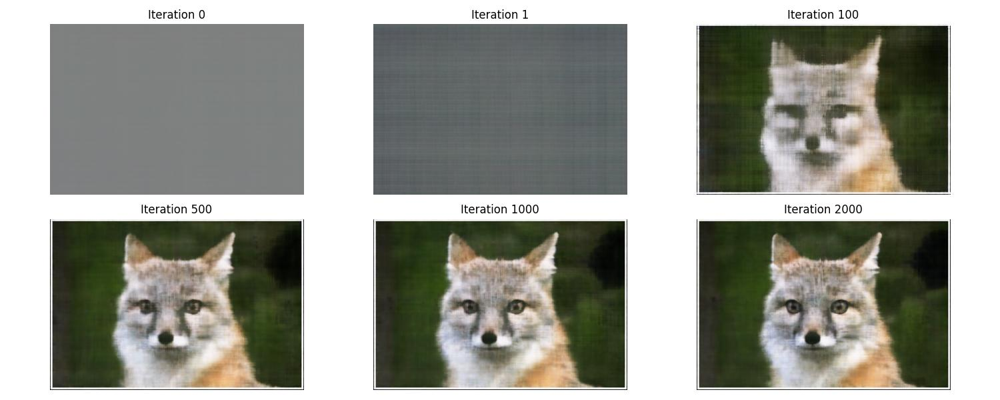
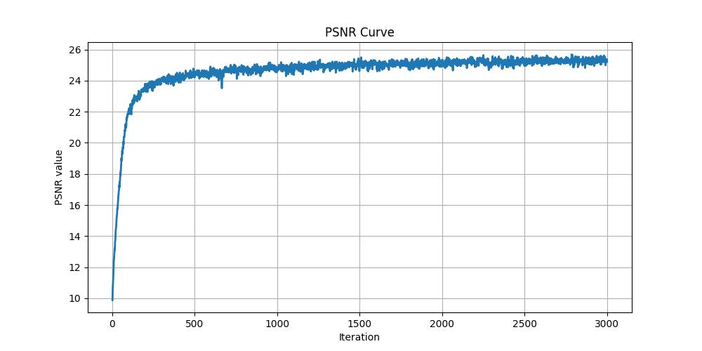
L = 5, width = 256:
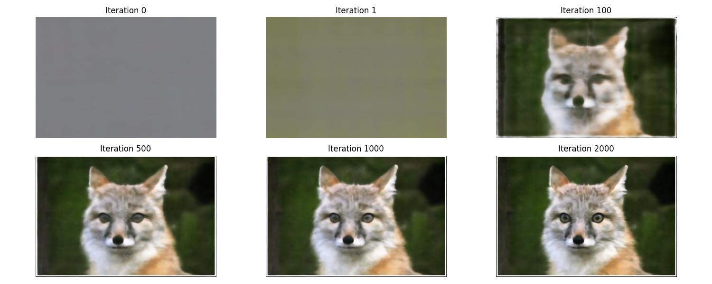
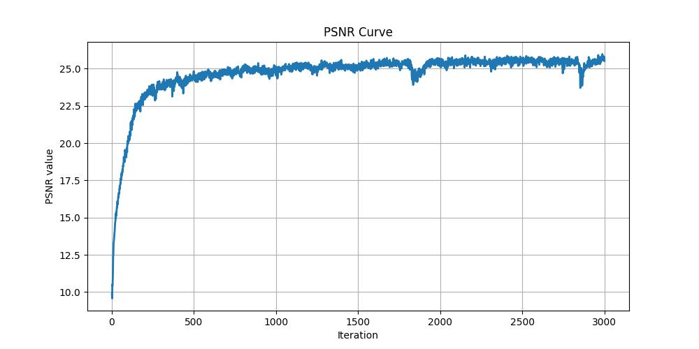
L = 10, width = 256:
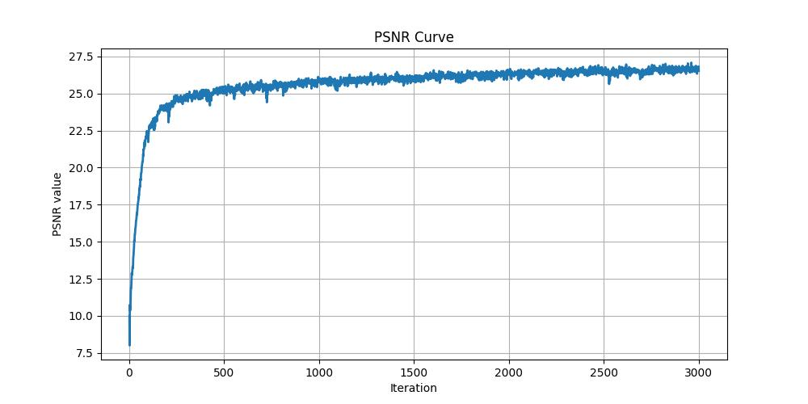
For the apples:
The quality of the resulting images also changes as the hyperparameters change. For both images, 4 sets of hyperparameters were run, with 2 values per hyperparameter: L = 5, 10 and width = 64, 256. The training progression comparison for the fox is:
L = 5, width = 64:
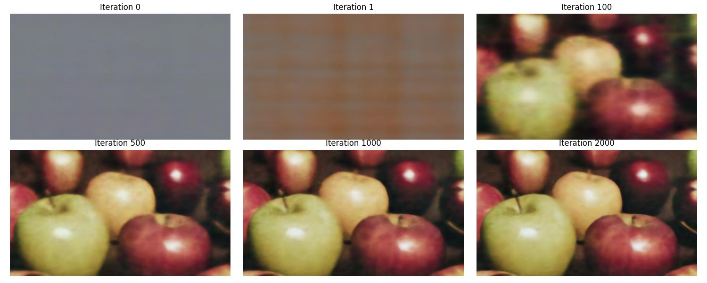
L = 10, width = 64:
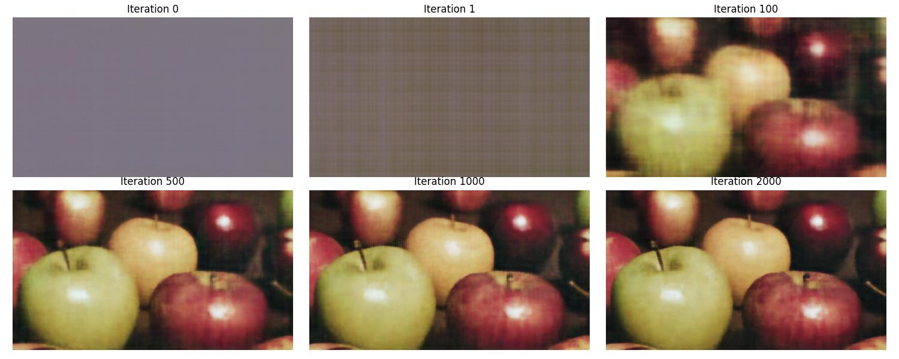
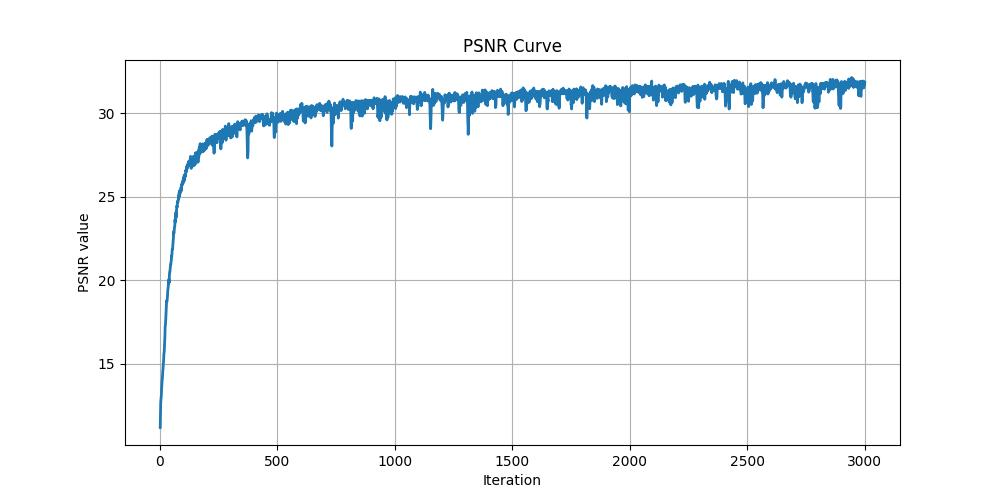
L = 5, width = 256:
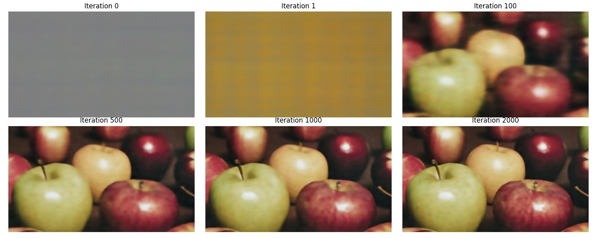
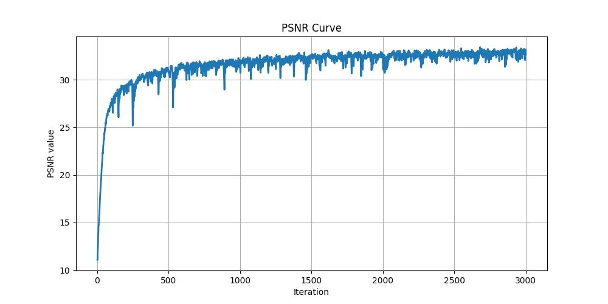
L = 10, width = 256:
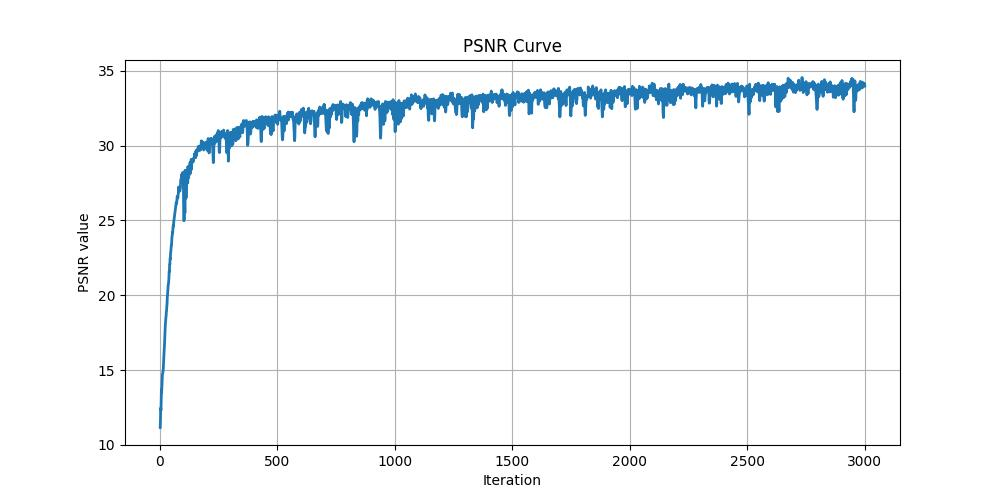
The primary observed result is that as L and width both increase, the resulting image is better and the network is better able to learn the "2D image function". This observation is also reflected in the PSNR curves, where the value is the best for L = 10, width = 256.
These results can also be visualized more concisely in a 2 x 2 grid for each image:
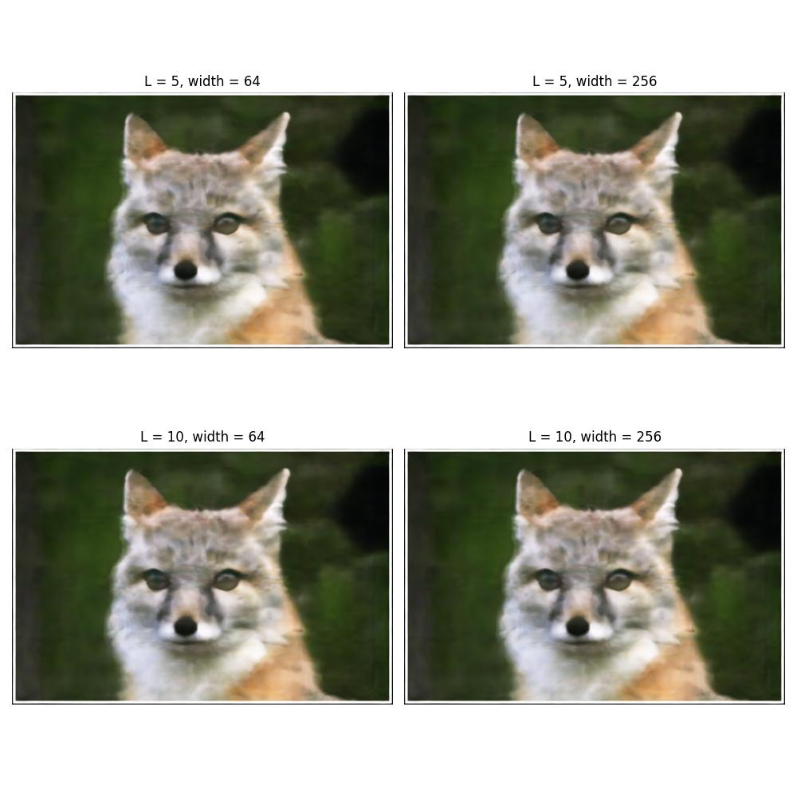 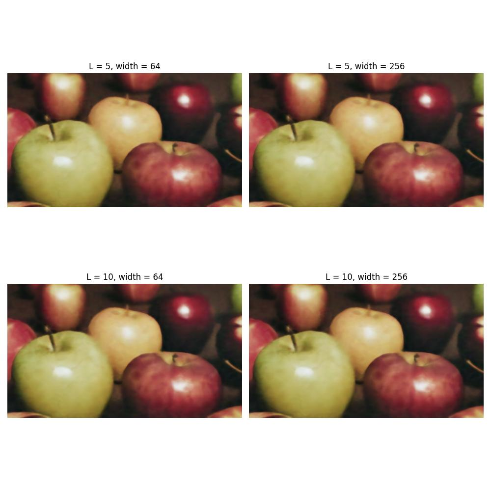Now, implementing an actual NeRF involves adding back radiance and real-world positions. This involved the implementation of a number of algorithms and functions.
Camera to World Coordinate ConversionThe first piece of logic is finding a way to convert from camera space to world space. This was done by implementing a function to transform a set of camera points given the camera-to-world transform (c2w). I used homogeneous coordinates to perform the transformation. I also added support for batched operations by padding/extending dimensions wherever necessary. The following is the psuedocode:
def transform(cam2world_matrix, camera_points):
format(camera_points)
world_points = matmul(cam2world_matrix, camera_points)
format(world_points)
Pixel to Camera Coordinate Conversion
The next piece is defining a conversion from pixel space to camera space. This is the reverse of the intrinsics matrix K, which is camera-to-image. The implementation was relatively similar. It involved using the same kind of homogeneous coordinates with matrix multiplication. The key difference is that this function must scale by the lost depth, which it must receive as an input, since that is a "lost dimension" when doing the reverse operation. This function also was made to support batched operations. The following is the pseudocode:
def pixel_to_camera(K_matrix, pixel_points, depth):
format(pixel_points)
K_inv = invert_matrix(K_matrix)
camera_points = matmul(K_inv, pixel_points)
format(camera_points)
Pixel to Ray
Given a pixel and the camera-to-world transform, it is useful to be able to derive the rays defining the pixel in 3D space. In particular, this involves the direction ray and the origin ray. The origin ray is defined as the center of the camera, which can be obtained using the translation vector from the camera-to-world transform. Then, to compute ray direction, I found the ray from pixel point to world point by performing a pixel-to-camera followed by camera-to-world operation (using a depth of 1), and then normalized this value. This was also made to support batched inputs. The following is the pseudocode:
def pixel_to_ray(K_matrix, cam2world_matrix, pixel_points):
format(pixel_points)
origin_vector = get_translation_vector(cam2world_matrix)
cam_points = pixel_to_camera(K_matrix, pixel_points, 1)
world_points = transform(cam2world_matrix, cam_points)
direction_vector = normalize(world_points - origin_vector)
Sampling Rays from Images
In order to randomly sample N rays from a set of M images, I sampled N // M points from each of the M images. I created the set of pixel coordinates (offsetting so that it corresponded with the centers of the pixels). Then, for each sampled pixel, I computed the ray origin and direction vectors using the pixel to ray function from earlier. Then, I found the pixel's corresponding RGB values from the image. This gives one part of the data: ray directions their associated colors. The following is the pseudocode:
def sample_from_images(images, num_rays, K_matrix, cam2world_matrices):
pixel_coords = get_pixel_grid(images)
offset(pixel_grid)
for image in images:
sampled_pixels = sample(pixel_coords, num_rays / len(images))
origin_rays, direction_rays = pixel_to_ray(K, cam2world_matrix for image, sampled_pixels)
rgb_values = get_values_from_image(sampled_pixels)
return origin_rays, direction_rays, rgb_values
Sampling Points along Rays
A ray is an infinite set of points. In order to get the other component of the input data from the ray, the 3D point, I wrote this function. It works by taking a given number of equally-spaced samples along the relevant part of the ray (defined by near and far points). To ensure these aren't always the same, I slightly perturbed these values (but only during training). Finally, the 3D point is given by the origin + distance along segment * direction, where the distance along the segment is a measure of position relative to the whole "relevant" section of the ray. The following is the pseudocode:
def sample_pts_along_rays(origin_rays, direction_rays, near, far, num_samples, perturb):
ray_points = create_samples_along_ray(near, far, num_samples)
if perturb:
add_perturb(ray_points)
points_3d = origin_rays + ray_points * direction_rays
Creating a Dataloader
These functions were used to create a data loader, which can do 2 main things. First, it can create a training batch by first sampling rays from images, getting the rays and their pixel values. This is simply the result of the sample_from_images function. The other main capability is returning all of the data, which is useful for evaluation and rendering. This is done by implementing sample_from_images, but without sampling. I checked the data loader's functionality by visualizing the sampled points and rays within Viser. The following is the pseudocode:
def check_data_loader(images, K_matrix, cam2world_matrices, near, far, num_samples):
dataset = Nerf3D_DataLoader(images, K_matrix, cam2world_matrices)
origin_rays, direction_rays, pixels = get_batch(dataset)
points = sample_pts_along_rays(origin_rays, direction_rays, near, far, num_samples, perturb=True)
plot_camera_frustrums_in_viser()
plot_points_in_viser()
This resulted in the following visualization:
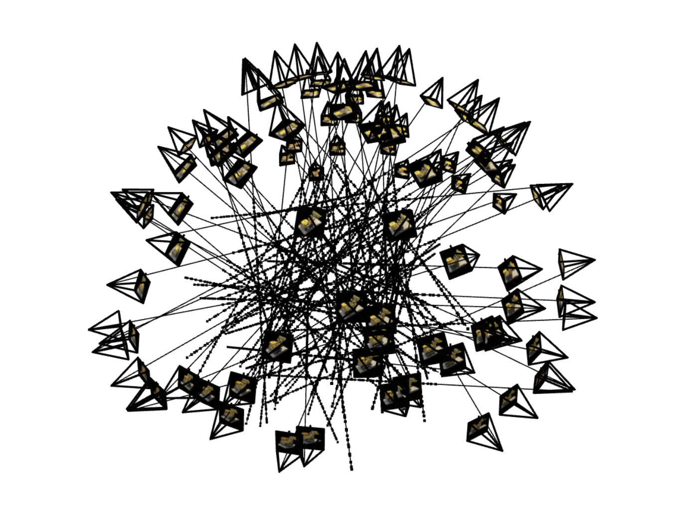 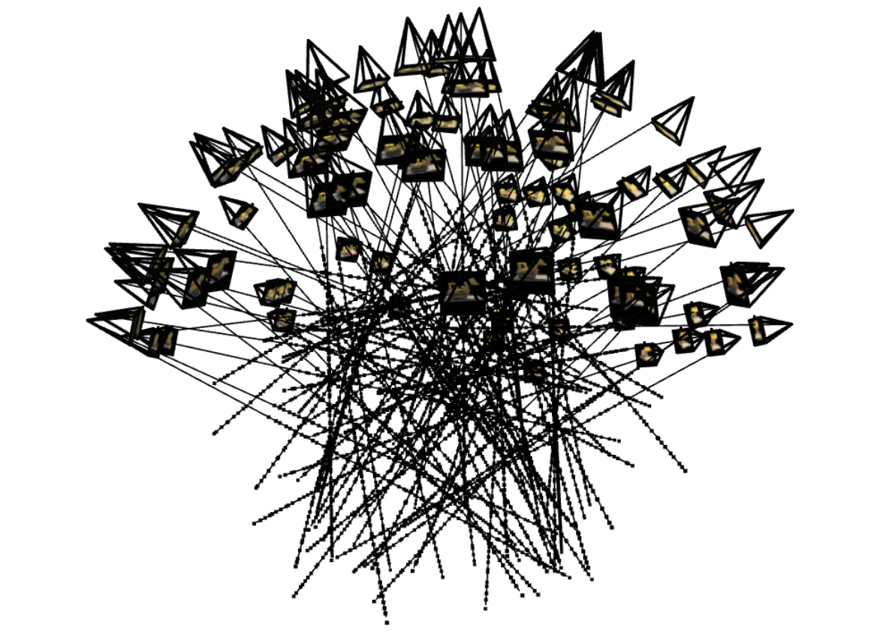In order to actually train a NeRF, I modified the prior implementation of the the neural field MLP. The positional encoding logic mostly remained the same, except that the viewing direction used a smaller maximum frequency (L = 4, instead of L = 10). This involved adding more layers, since this is a more difficult function to learn and it made sense to add a lot more parameters. I also added skip connections, where the original data point is concatenated to an intermediate model output in the middle of the model, so that the model wouldn't "forget" the original input values. Another key difference is that the network splits to produce 2 different outputs at some point. One of these outputs is the density, and the other is the color. Overall, the model architecture looked like the following:
pre_skip = Linear(input, 256) -> ReLU -> Linear(256, 256) -> ReLU -> Linear(256, 256) -> ReLU -> Linear(256, 256) -> ReLU
post_skip = Linear(input + 256, 256) -> ReLU -> Linear(256, 256) -> ReLU -> Linear(256, 256) -> ReLU -> Linear(256, 256)
density_output = Linear(256, 1) -> ReLU
color_output_pre_concat = Linear(256, 256)
color_output_post_concat = Linear(input + 256, 128) -> ReLU -> Linear(128, 3) -> Sigmoid
Volume Rendering
The final component was implementing volume rendering, which involved implementing the volume rendering formula in code. This was used to compute the final color along each ray by accumulating the appropriate values from each of the sampled points, then weighting those values by the density and transmittance values. This was used to obtain images back from the network scene function.
The training process can be visualized with the following image:
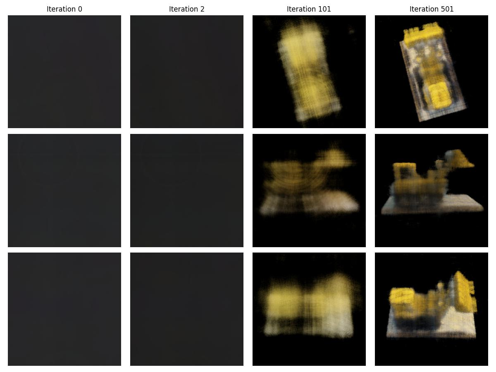This shows the same three viewpoints at various iterations throughout the training process.
This is the result from the final iteration:
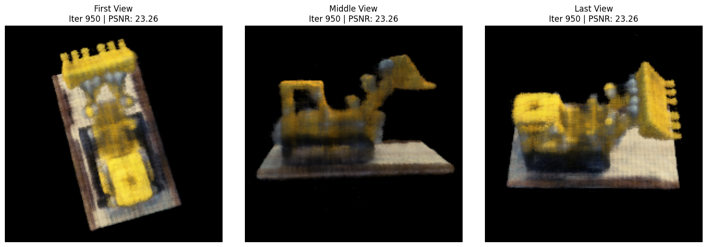In order to track progress, while MSE was used for loss, PSNR was used to evaluate the reconstruction quality. The following are the MSE and PSNR curves for both training and validation:
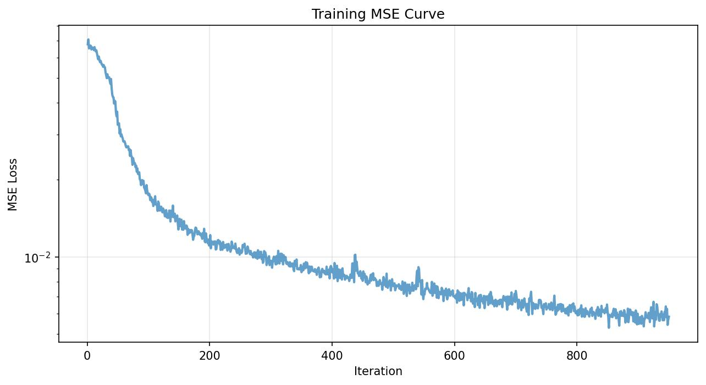 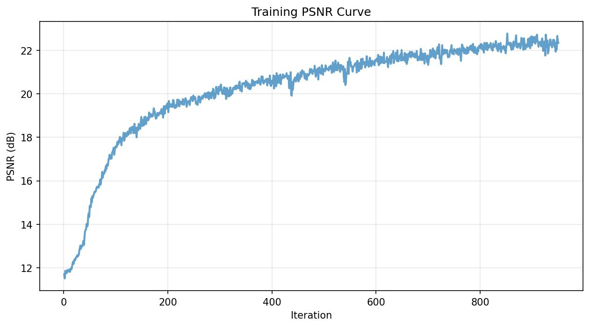The final result is this video, which uses the provided test cameras:

Using the dataset produced from the custom images from part 0, I trained a NeRF and used it to render the following video containing novel views of the original scene:
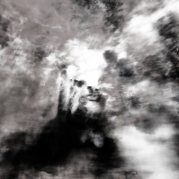For the most part, the training process was the same as for the neural field. The main architecture changes are described above (the model architecture for the above GIF was the same as that for the lego dataset). The hyperparameters were also kept the same (L for coordanates = 10, L for directions = 4, width/hidden dimension = 256, samples per ray = 64). The main changes were to near and far, which were set to 0.15 and 1.15, respectively. These new values were determined by looking at what fit the new dataset the best. I also set the maximum number of training iterations to 15000 to ensure that the network would have enough iterations to reach a sufficient PSNR. The final change was the video rendering logic, which involved rewriting the script to produce test c2w matrices.
The following is the training MSE and validation PSNR curves over the training process, which was stopped when PSNR hit 23:
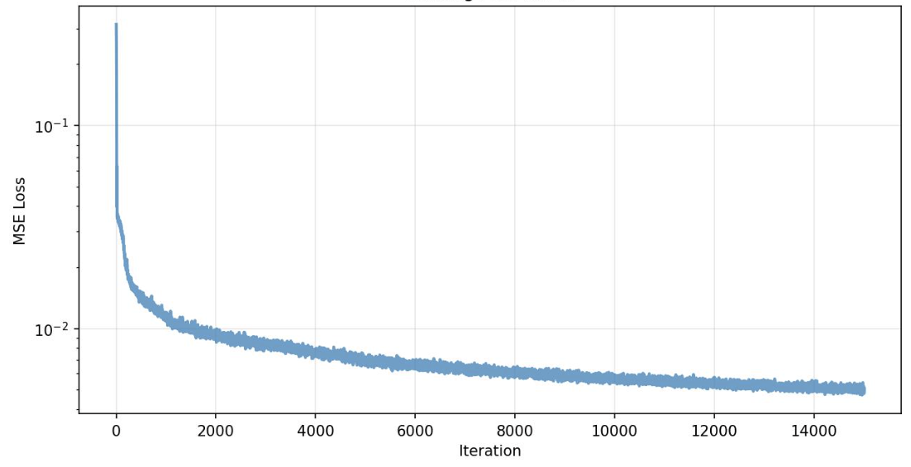 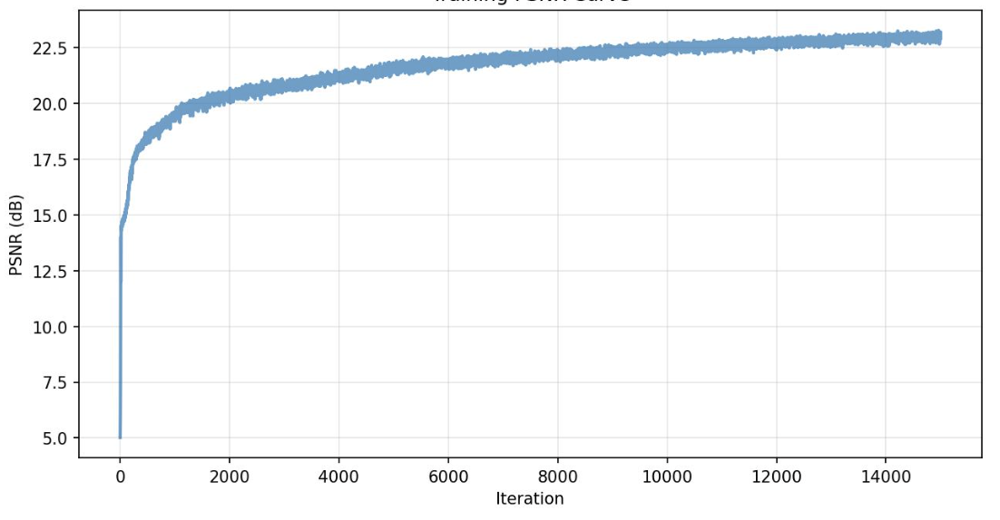Here is a the same plot of the training process (with intermediate renders) for the new dataset:
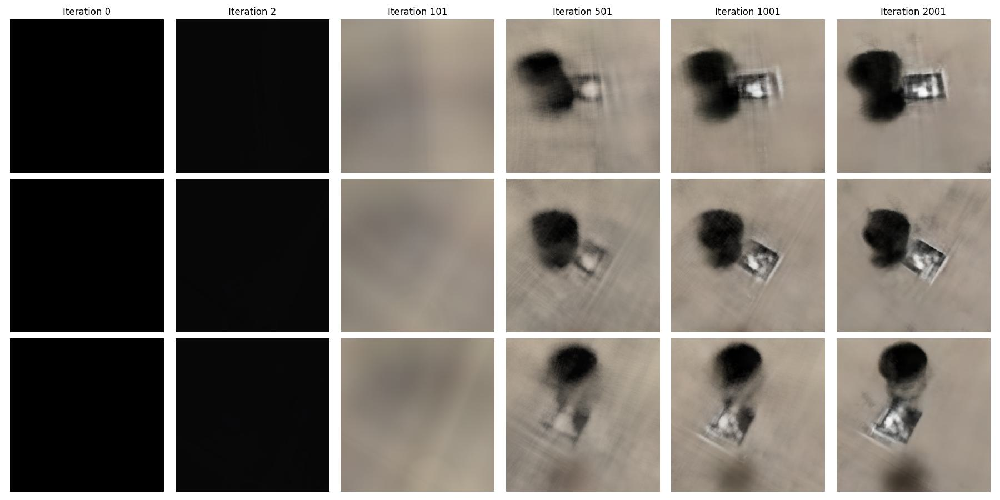This is the result from the final iteration:
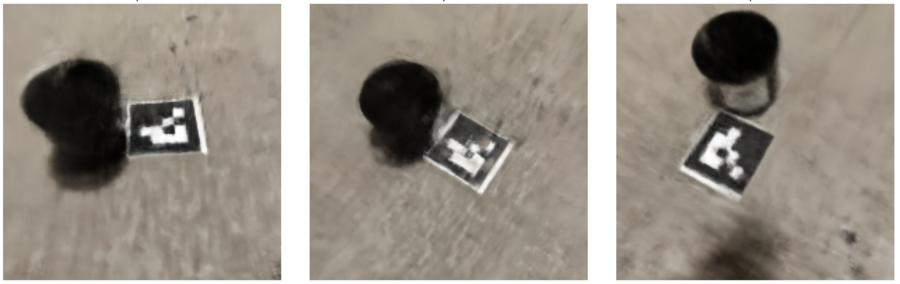